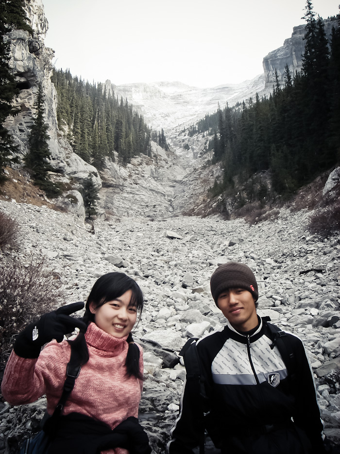

Mt.Rundle 등산
Pastor Robert Rundle을 기념하며 붙여진 이름 Rundle 산. 정상이 2950m 정도 되는 주변의 다른 산들과 비슷한 높이의 산이다. 밴프의 양대 산 ( Mt.Cascade, Mt.Rundle ) 중 하나인 Rundle은 멋진 위용을 자랑하며 밴프 시내에서 한눈에 보인다. 이 Rundle은 단 하나의 봉우리만 있는 것이 아니라 여러 봉우리가 이어져있어 그 끝이 Canmore 까지 연결된다.
얼마전 (10월 4일) 일이 쉬는 날 등산으로 Mt.Rundle을 탔다. 쉬는날 Sulfur 산을 타는 것은 시간 소비인 것 같아서 그래도 오래 탈 수 있는 산을 찾아보니 Mt.Rundle이 적당한 듯 했다. 3000m 에 가까운 산을 처음 타보는 것이라 이것 저것 많이 준비했다. 겨울용 장갑, 바지 내복, 파카, 튼튼한 등산화 등. 결국 준비한 것 모두 요긴하게 쓰였다. 앞에 열거한 것중 단 하나라도 없었으면 Rundle을 등반하지 못했을 것이다.
Rundle은 Fairmont Banff Springs 호텔 골프장에서부터 시작한다. Spray Loop 길을 따라 조금 걸어가다 보면 Jct. Rundle Mountain 으로 가는 길이 나오고 이때부터 Rundle은 시작된다. 이 Jct. Rundle Mountain에 도착하니 점심에 먹을 초코바를 사지 않았다는 것이 생각났다. 게다가 물통은 500ml 단 하나뿐, 먹을것은 출발할 때 들고 온 오렌지가 전부였다. 시간은 9시 15분, 다시 돌아가서 초코바와 물을 사오기에는 시간이 많이 걸릴 것 같았다. 이 때 고민을 많이 했다. 그래도 단 하나뿐인 기회, 늦게 가면 놓치게 될 것 같아 강행을 시작했다. 이 때부터 내 파란만장한 Rundle 이야기는 시작되었다.
시작한지 1시간 20분 정도가 지나 gully(협곡) 에 도착했다. 협곡 이전까지는 잘 닦여진 trail이 존재했으나 협곡 이후부터는 trail은 존재하지 않고 방향이 올바르다는 yellow mark만이 내 유일한 지표가 되었다. 그 때부터 가파른 길이 시작되었다. 협곡 이전 까지 속도 조절을 해서 힘을 비축해 둔다고 노력했지만 협곡 이후의 가파른 경사에는 무용지물이었다. 가파른 경사를 올라간지 얼마 되지 않아 내 체력은 바닥이 났다. 10~20m 올라가고 쉬는 행동을 반복한지 1시간 정도 만에 수목 한계선을 넘었다. 높은 고도로 인해 더 이상 나무가 자랄 수 없는 한계 수목 한계선 그곳을 넘으니 나무는 모두 사라지고 앞에 보이는 것은 바위 뿐이었다.
이미 물은 바닥이 났고 내게 남은 것은 오렌지 하나 뿐이었다. 이제 겨우 2000m를 넘었을 뿐인데 힘은 들고, 공기가 희박해지는 것 같았다.(과장) 경사는 점점 가파르게 되어 50도를 넘겼다. 두발만으로는 올라가기 힘들어 두손을 사용해야 했다.
그렇게 조금을 더 오르자 Dragon's Back (용등) 에 도착했다. Dragon's Back이란 이름이 왜 붙여졌는지 궁금하다면 용등의 제일 위쪽으로 올라가서 뒤를 돌아보면 알게 된다. 좌,우로 100m 이상의 낭떠러지가 있고 폭은 5미터 정도 밖에 되지 않는 길이 뱀처럼 휘어져있다. 마치 용이 올라갈때 용솟음치는 모양같다. Dragon's Back에서는 미끄러지면 바로 낭떠러지다. 그래서 더욱 긴장되고 더욱 체력소비가 심해진다. Dragon's Back을 지나 오렌지를 꺼내 먹었다. 정상에서 먹기로 다짐했는데 더이상 당분 섭취를 못한다면 정상까지 올라가지도 못할 것 같았다. 바닥난 물을 다시 채우려고 주위를 둘러보니 아직 녹지않은 눈이 있었다. 눈이 약간 녹다가 다시 얼기를 반복한 것 같았다. 마치 얼음 같았다. 눈을 먹고 물통에도 눈을 담았다. 이 눈이 그날 저녁까지 완전히 녹지 않았다.
이미 체력은 바닥나버렸다. 이제 남은것은 오기 뿐, Dragon's Back 과 Summit 사이에서 난 많은 갈등을 했다. 과연 이 길을 올라가야 하나, 점심도 제대로 먹지 못했는데,, 정상까지는 50m 가 채 남지 않았지만 그 길을 오를 수 있을지 고민이 많았다.
그리고 한걸음씩 내딛었다.
Second Hiking
10월 27일, 눈보라가 매섭게 부는 날. 난 또다시 런들을 탔다. 눈은 이미 런들에 가득했다. 겨울 산행을 위해 내복도 입고 아이젠(여기에서는 crampon 이라 부른다 )도 대여를 했다. 밴프에서 아이젠을 대여하는 곳은 Box Office 건너편인 Mountain Magic Equipment ( Mountain Magic Sport 가 아니다 ) 에서 10불정도에 대여가 가능하다.
크램폰을 배낭에 단단히 메고 런들을 향하기 시작했다. 나 이외에 다른 두 사람( 승윤이형, 경오누나 )은 런들 정상에 올라본 적이 없었다. 승윤이형은 수목 한계선을 넘고 다시 돌아왔을 뿐. 내가 이 여정에 동참한 이유이기도 하다. 눈보라 치는 날, 아무런 경험없는 두 사람이 정상을 밟는다는게 얼마나 힘들지 알기에..
협곡까지 가는 길은 순조로웠다. 음식도 넉넉하게 준비했고, 물도 충분할 만큼 준비했다. 내 몸의 상태는 더할 나위없이 좋았다. 지난 등산보다 더 나쁜상황은 있을 수 없다. 그런 상황에서도 정상에 올랐는데 지금이라고 오르지 못할까.. 라는 자신감으로 더 힘차게 갈 수 있었다. 일단 협곡까지는 페이스 조절을 하며 천천히 갔다. 어차피 난관은 협곡까지 가는 평탄한 길이 아니라 협곡을 지나서 나오는 급경사의 스크램블(scramble) 등산이다.

협곡에서 간단히 사진을 찍고 경사40도를 넘는 길을 오르기 시작했다. 일단 처음 목표는 수목한계선을 넘는 것. 오른지 얼마 되지않아 예상했던 대로 경오누나의 걸음이 쳐지기 시작했다. 페이스 조절을 해도 힘든건 힘든 것. 그나마 얼마나 덜 힘드냐의 문제일 뿐이다. 속도를 더 늦췄다. 내 예상보다 등산 시간이 더 길어질 것 같다. 이전 등산은 7시간이 걸렸지만 이번은 예상했던 8시간보다 더 걸릴 것 같다.
한시간이 조금 더 지났을까? 우리는 수목한계선을 넘었다. 그리고 준비해온 점심을 먹었다. 느끼하고 영양이 풍부하게 만든 주먹밥. 그것을 먹으니 힘이 다시 솟아나기 시작했다. 이제 다음 목표는 런들의 핵심, 용등(dragon's back)을 넘는 것. 수목한계선을 넘고 조금 올라가니 용등이 나오기 시작했다. 좌우의 절벽, 그리고 좁은길, 처음 등산을 생각나게 만들었지만 이번엔 상황이 조금 달랐다. 눈이 온 상태라 얼음이 많이 덮여있었다. 이곳에서 처음으로 "우리 내려가면 안될까?" 라는 말이 경오누나 입에서 나왔다. 사실 그 전부터 급경사에 겁을 먹은 것 처럼 보였지만 내려가자는 말 한마디 꺼내지 않았었다. 그러다 갑자기 튀어나온 말에 난 일단 정상이 얼마 남지 않았다고 말하는 것 외에는 다른 방법이 없었다. 자신과의 싸움이다. 런들은 산을 정복하는 것이 아니다. 자신을 정복하지 못하면 오르지 못하는 산이다. 두려움을 이기고, 힘든 것을 참아내는 자만이 정상에 설 수있는 권리를 얻는 것이다. 마치 런들이 그러지 못한 사람을 다시 떨쳐내는 것 같았다.
용등을 넘고 나니 이제는 온통 눈이 가득하다. 크램폰을 꺼내야 할까 고민을 하다가 일단은 그냥 올라가보기로 했다. (결국 크램폰은 정상에 갈때까지 사용하지 않았다.) 얼음이 있는 곳은 내가 올라가면서 발을 지지할 수 있게 꾹꾹 눌러서 흔적을 남기고 올라갔다. 정상에 가까워 올수록 체력은 급격하게 떨어졌다. 조금가고 쉬고 조금가고 쉬고를 반복하였다. 그러나 나에게는 그러한 힘든것도 힘들게 느껴지지 않았다. 이전의 등산에 비하면 정말 쉬운 등산이었다. 다만, 거친 눈보라는 우리의 진을 더 빼놓기는 했다.
그러나 눈보라를 뚫고, 떨어진 체력을 이겨내며 올랐다. 그리고 정상에 섰다. 구름이 가득해서 바닥을 볼 순 없었지만 런들에서 아련히 보이는 그 로키의 광경 하나만으로 충분했다.
산, 왜 그곳에 오르는 것일까? 많은 사람들이 많은 이유를 가지고 있다. 간혹 내 친구들은 이런 말을 한다. "다시 내려올꺼 왜 힘들게 올라가?" 지금 내가 해주고 싶은 말은 이렇다. "산을 내려오면 나는 그자리 이지만, 내 추억은 산 정상에 두고 온다." 잊을 수 없는 추억이 런들 정상에 묻혀있다.